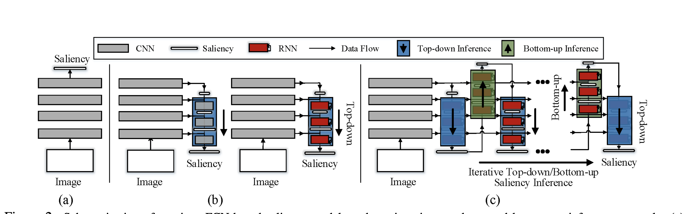

CVPR 2019, 论文链接
本文的绝大部分篇幅都在尝试为大部分显著性检测网络概括出一个通用的框架，相比而言文中对自身提出的模型几乎没有加以论述，个人觉得一定程度上可以看作一篇综述性文章。文中最具概括性的图如下所示。

从左往右分别为：单纯的Feedforward网络结构，但是由于池化层使分辨率逐层降低，预测结果较差；Top-Down网络结构，特征提取网络逐层提取特征，并逐级上采样，期间通过CNN、RNN等方式融合不同层特征，最后得到与ground truth尺寸一致的显著性推断结果；Top-Down与Bottom—Up迭代优化的模型，该模型收到生物视觉系统启发，同时基于假设：通过Top—Down获得的高精度的特征图可以优化Bottom-Up模型。文中分别详细叙述了Top-Down与Bottom-Up过程，并概括出了通用的模型结构。此外，文中也对不同层间的特征共享与权重共享方法进行了讨论，并提出了不同需求下共享模式的设计方法。
文中还讨论了在Top-Down及Bottom—Up中采用CNN或RNN的作用以及相应通用模型，以及deep supervision的作用。
本文还在ECCSD、DUT-OMRON等数据集上，对不同配置下（例如VGGNet/ResNet，有或无CRF）的28种模型进行了测试，有详细的实验结果，并且结果表明本文所提出的模型具有SOTA的表现。
（这篇文章刚开始很正常，讲了讲motivation，结果后面越看越像综述，反而几乎没提自己的模型。。。只在implementation detail里提了一下。另外一个特点是这篇文章的实验结果很丰富。）